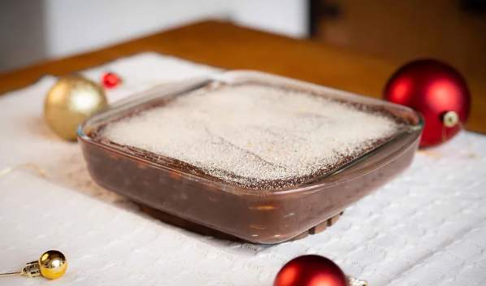

Pavê de Palha Italiana

Feito em camadas, o pavê de palha italiana leva ingredientes que podem ser encontrado facilmente em qualquer supermercado. O segredo para que esta sobremesa perfeita para a ceia de Natal não fique muito doce, é utilizar o chocolate amargo no preparo. Além disso, ela também leva manteiga com sal, o que deixa o sabor da sobremesa bem equilibrado
No Delícias na Travessa, a influenciadora Michele Ykegaya ensina a preparar o pavê de palha italiana em um passo a passo simples, sem mistério. Veja como fazer o doce ideal para quem busca economizar o tempo na cozinha:
Ingredientes
- 200 gramas de chocolate amargo
- 2 latas de leite condensado
- 50 mililitros de leite integral
- 3 colheres de sopa de manteiga com sal
- 1 caixa de creme de leite
- 2 pacotes de biscoito maisena
- Leite o quanto baste para molhar os biscoitos
Passo a Passo
- Em uma panela de fundo grosso, coloque chocolate amargo, leite condensado, leite integral, creme de leite e a manteiga.
- Acenda em fogo baixo e cozinhe até desgrudar do fundo da panela.
- Em uma travessa, monte o doce em camadas de biscoito molhados no leite e brigadeiro.
- Finalize com uma camada de chocolate e biscoitos ralados
- Leve à geladeira até esfriar e pronto: seu pavê de palha italiana já pode ser servido e vai arrasar. Boas festas!